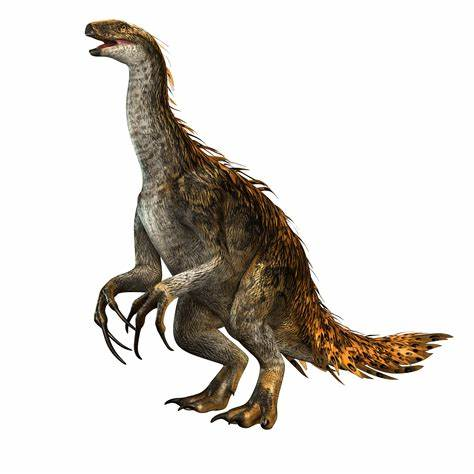

Tyrannosaurs

Giganotosaurus
Spinosaurus

Tyrannosaurus
Found in late cretaceous periodTyrannosaurs were the killing machines of the late Cretaceous period. These huge,powerful carnivores were all legs, trunk, and teeth, and they preyed relentlessly on smaller, herbivorous dinosaurs.it has an estimated length of up to 13 meters / 43 feet, T. rex is one of the largest land predators that ever lived.estimated length of up to 13 meters / 43 feet, T. rex is one of the largest land predators that ever lived
Sauropods
diplodocus
Brachiosaurus
Sauropoda , whose members are known as sauropods, is a clade of saurischian ('lizard-hipped') dinosaurs. Sauropods had very long necks, long tails, small heads (relative to the rest of their body), and four thick, pillar-like legs. They are notable for the enormous sizes attained by some species, and the group includes the largest animals to have ever lived on land.Some famous Sauropods are Brachiosaurus, Diplodocus,Apatosaurus and Brontosaurus.
Ceratopsians
triceratops
Torosaurus
Ceratopsia or Ceratopia is a group of herbivorous, beaked dinosaurs that thrived in what are now North America, Europe, and Asia, during the Cretaceous Period, although ancestral forms lived earlier, in the Jurassic.Some famous ceratopsians are Triceratops, Torosaurus, Pachyrhinosaurus, Centrosaurus, Chasmosaurus, Zuniceratops, Protoceratops, and Yinlong12
Raptors
velociraptor
Technically, paleontologists define raptors, or dromaeosaurs, as theropod dinosaurs that share certain obscure anatomical characteristics. For our purposes, though, raptors can be broadly described as small- to medium-sized, bipedal, carnivorous dinosaurs equipped with grasping, three-fingered hands, relatively bigl brains, and huge, solitary claws on each of their hind feet, which they probably used to slash and occasionally disembowel their prey. Fun fact they have feathurs on their body just like modern birds
Theropods
carcharodontosaurus

allosaurus
segnosaurus
Theropoda , whose members are known as theropods, is a dinosaur clade that is characterized by hollow bones and three toes and claws on each limb. Theropods are generally classed as a group of saurischian dinosaurs.They were ancestrally carnivorous, although a number of theropod groups evolved to become herbivores and omnivores. Some famous theropods are Allosaurus,segnosaurs,Carharodontosaurus etc.
Titanosaurs
argentinosaurus
Bruhathkayosaurus
titanosaur, (clade Titanosauria), diverse group of sauropod dinosaurs classified in the clade Titanosauria, which lived from the Late Jurassic Epoch (163.5 million to 145 million years ago) to the end of the Cretaceous Period. Like other sauropods, titanosaurs were herbivorous quadrupeds with long tails, long necks,and small heads. They differed from other sauropods, however, in that the titanosaurs’ bodies were stockier and their limbs produced a wider stance than other sauropods.Some famous titanosaurs are Dreadnoughtus,Patagotitan,Argentinosaurus, Bruhathkayosauru, etc.
Ankylosaurs

Ankylosaurus
sauropelta
polacanthus
Ankylosaurus is estimated to have been between 6 and 8 meters (20 and 26 ft) long and to have weighed between 4. and 8 metric tons (5.3 and 8.8 short tons). It was quadrupedal,with a broad, robust body. It had a wide, low skull, with two horns pointing backward from the back of the head, and two horns below these that pointed backward and down. Unlike other ankylosaurs, its nostrils faced sideways rather than towards the front. The front part of the jaws was covered in a beak, with rows of small, leaf-shaped teeth farther behind it.It was covered in armor plates, or osteoderms, with bony half-rings covering the neck, and had a large club on the end of its tail. Bones in the skull and other parts of the body were fused,increasing their strength, and this feature is the source of the genus name.Some famous ankylosaurus are ankylosaurus,polacanthus,souropelta etc.
Hadrosaurs
Edmontosaurus
They were large animals ranging from 7 to 8 m (23 to 26 ft) and 2 to 4 t (2.2 to 4.4 short tons). Most of the preserved elements are very robust, unusual traits in hadrosaurs. Hadrosaurus were ponderously-built animals equipped with keratinous beaks for cropping foliage and a specialized and complex dentition for food processing. Some famous Haddrosaurs are Edmontosaurus,Parasaurolophus ,Hypacrosaurus etc.
Ornithomimids
qlupalog
sinornithomimus
Ornithomimidae (meaning "bird-mimics") is a family of theropod dinosaurs which bore a superficial resemblance to modern ostriches. Ornithomimids were fast, omnivorous or herbivorous dinosaurs known mainly from the Late Cretaceous Period of Laurasia (now Asia and North America), though they have also been reported from the Lower Cretaceous Wonthaggi Formation of Australia.The skulls of ornithomimids were small, with large eyes, above relatively long and slender necks. All had toothless beaks.Some examples are Qiupalong,Sinornithomimus etc.
Ornithopods
Shantungosaurus
parasaurolophus
Ornithopoda is a clade of ornithischian dinosaurs, called ornithopods that started out as small, bipedal running grazers and grew in size and numbers until they became one of the most successful groups of herbivores in the Cretaceous world, dominating the North American land. Their major evolutionary advantage was the progressive development of a chewing apparatus that became the most sophisticated ever developed by a non-avian dinosaur, rivaling that of modern mammals such as the domestic cow.some famous ornithopods parasaurolophus, Nanosaurus, Hypsilophodon,Shantungosaurus and Jeholosaurus
Pachycephalosaur
pachycephalosaurus
Stygimoloch
Pachycephalosaurus was among the last species of non-avian dinosaurs on Earth before the Cretaceous–Paleogene extinction event. The genus Tylosteus has been synonymized with Pachycephalosaurus, as have the genera Stygimoloch and Dracorex, in recent studies.Like other pachycephalosaurids, Pachycephalosaurus was a bipedal herbivore, possessing long, strong legs and somewhat small arms with five-fingered hands. Pachycephalosaurus is the largest-known pachycephalosaur, known for having an extremely thick, slightly domed skull roof
Prosauropods
Camelotia
Melanorosaurus
Prosauropods weren't simply scaled-down versions of Brachiosaurus or Apatosaurus; many of them walked on two legs, and there's some evidence that they may have pursued an omnivorous, rather than strictly herbivorous, diet.One of the reason prosauropods are fairly obscure--at least compared to raptors, tyrannosaurs and sauropods--is that they didn't look all that distinctive, by dinosaur standards. As a general rule, prosauropods had long (but not very long) necks, long (but not very long) tails, and only attained median sizes ofbetween 20 and 30 feet and a few tons, max.Some famous of these species are Efraasia,Melanorosaurus and Camelotia.
Stegosaurus

Stegosaurus ungulatus

Stegosaurus stenops
Stegosaurus is a genus of herbivorous, four-legged, armored dinosaur from the Late Jurassic, characterized by the distinctive kite-shaped upright plates along their backs and spikes on their tails.They were large, heavily built, herbivorous quadrupeds with rounded backs, short fore limbs, long hind limbs, and tails held high in the air.Due to their distinctive combination of broad, upright plates and tail tipped with spikes, Stegosaurus is one of the most recognizable kinds of dinosaurs. The function of this array of plates and spikes has been the subject of much speculation among scientists.Some famous Stegosaurus are Stegosaurus ungulatus,Stegosaurus sulcatus ,Stegosaurus stenops etc.
Therizinosaur

Alxasaurus

Erliansaurus
Therizinosaurus is a genus of very large therizinosaurid that lived in Asia during the Late Cretaceous period. Therizinosaurus was a colossal therizinosaurid that could grow up to 9–10 m (30–33 ft) long and 4–5 m (13–16 ft) tall, and weigh possibly over 5 t (5.5 short tons). Like other therizinosaurids, it would have been a slow-moving, long-necked, high browser equipped with a rhamphotheca (horny beak) and a wide torso for food processing. Its forelimbs were particularly robust and had three fingers that bore unguals which, unlike relatives, were very stiffened, elongated, and only had significant curvatures at the tips. Therizinosaurus had the longest known manual unguals of any land animal, reaching above 50 cm (20 in) in length. Some famous of these species are Alxasaurus,Erliansaurus,Erlikosaurus etc.